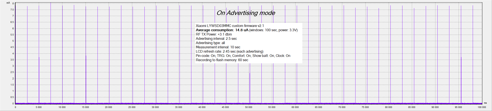
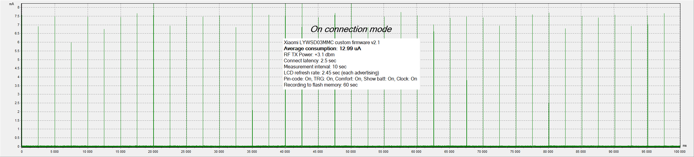
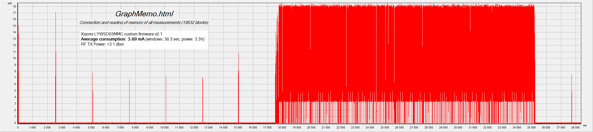

Average power consumption of LYWSD03MMC custom firmware
On Advertising mode:

Xiaomi LYWSD03MMC custom firmware v2.1
Average consumption: 14.8 uA (windows: 100 sec, power: 3.3V)
RF TX Power: +3.1 dbm
Advertising interval: 2.5 sec
Advertising type: all
Measurement interval: 10 sec
LCD refresh rate: 2.45 sec (each advertising)
Pin-code: On, TRG: On, Comfort: On, Show batt: On, Clock: On
Recording to flash memory: 60 sec
On connection mode:

Xiaomi LYWSD03MMC custom firmware v2.1
Average consumption: 12.99 uA (windows: 100 sec, power: 3.3V)
RF TX Power: +3.1 dbm
Connect latency: 2.5 sec
Measurement interval: 10 sec
LCD refresh rate: 2.45 sec (each advertising)
Pin-code: On, TRG: On, Comfort: On, Show batt: On, Clock: On
Recording to flash memory: 60 sec
Connection and reading of memory of all measurements (19632 blocks):

Xiaomi LYWSD03MMC custom firmware v2.1
Average consumption: 3.89 mA (windows: 38.3 sec, power: 3.3V)
RF TX Power: +3.1 dbm